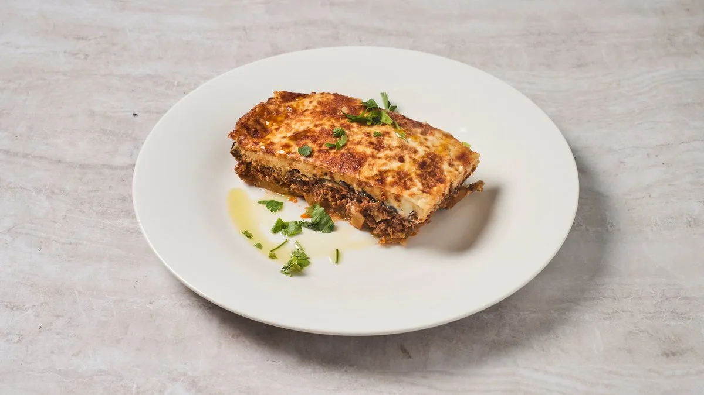
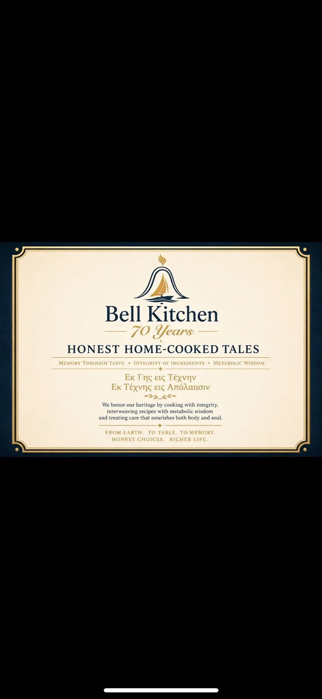

Επιλογή ΣεφΠιο δημοφιλέςΠαραδοσιακός Μουσακάς
Σιγοψημένη μελιτζάνα, μοσχαρίσιος κιμάς σε ντομάτα και κανέλα, με αέρινη μπεσαμέλ. Η συνταγή δεν έχει αλλάξει από τη δεκαετία του ’70 — ούτε και η αγάπη.
€9.90
Έντιμη, σπιτική ελληνική κουζίνα σε μια θρυλική κουζίνα του Κουκακίου που ταΐζει τη γειτονιά από το 1956. Πέντε λεπτά από το Μουσείο Ακρόπολης — κι έναν ολόκληρο κόσμο μακριά από τα τουριστικά μενού.

70 Χρόνια
Έντιμες Σπιτικές Ιστορίες
Μνήμη μέσα από τη Γεύση·Ακεραιότητα των Υλικών·Μεταβολική Σοφία
ΕΚ · ΓΗΣ · ΕΙΣ · ΤΕΧΝΗΝ
ΕΚ · ΤΕΧΝΗΣ · ΕΙΣ · ΑΠΟΛΑΥΣΙΝ
Από τη Γη στην Τέχνη · Από την Τέχνη στην Απόλαυση
— · —
Τιμούμε την κληρονομιά μας μαγειρεύοντας με ακεραιότητα, υφαίνοντας τις συνταγές με μεταβολική σοφία και τη φροντίδα που τρέφει και το σώμα και την ψυχή.
Από τη Γη. Στο Τραπέζι. Στη Μνήμη.
Έντιμες Επιλογές. Πλουσιότερη Ζωή.
Σιγομαγειρεμένα κλασικά, φρέσκα λαχανικά κάθε μέρα, έντιμες μερίδες — σε τιμές γειτονιάς, όχι καρτ-ποστάλ.

Επιλογή ΣεφΣιγοψημένη μελιτζάνα, μοσχαρίσιος κιμάς σε ντομάτα και κανέλα, με αέρινη μπεσαμέλ. Η συνταγή δεν έχει αλλάξει από τη δεκαετία του ’70 — ούτε και η αγάπη.
 Δημοφιλές
Δημοφιλές
Στρώσεις μπουκατίνι, μοσχαρίσιο ραγού και βελούδινη μπεσαμέλ — το κλασικό ελληνικό κυριακάτικο τραπέζι, από την ίδια κουζίνα από το 1956.
 Ελαφρύ & λιτό
Ελαφρύ & λιτό
Φιλέτο στήθος κοτόπουλο μαριναρισμένο σε ρίγανη και λεμόνι, ψημένο στη σχάρα πάνω σε ρύζι μπασμάτι με άνηθο. Έντιμη πρωτεΐνη, με μέτρο.
Διαβάστε για τα πιάτα-υπογραφή μας: Παραδοσιακός Μουσακάς · Καραβίδες & λιγκουίνι · Το Άγριο Ψάρι & η Φωλιά
Δείτε όλο το μενού →Το Ανοιχτό Κελάρι
Δεν έχουμε τίποτα να κρύψουμε. Όταν τρώτε στο Bell Kitchen, κάθε πιάτο χτίζεται από μια σύντομη λίστα αληθινών υλικών που εμπιστευόμαστε αρκετά ώστε να τα κατονομάσουμε. Δεν χρησιμοποιούμε στα κρυφά τίποτα που δεν θα βάζαμε με περηφάνια στο δικό μας τραπέζι.
Με έντιμη προέλευση · Κατονομασμένα με περηφάνια
Ποτέ, αυστηρά, στο φαγητό μας
Η γωνία της Πετμεζά και της Φαλήρου μυρίζει σιγομαγειρεμένη ντομάτα από το 1956 — όταν αυτός ο χώρος άνοιξε για πρώτη φορά ως λαϊκή ταβέρνα για τις οικογένειες που έχτισαν αυτό το κομμάτι της Αθήνας.
Σήμερα, υπό την ομάδα Little Noe, το Cookaki συνεχίζει την ίδια ιδέα με πιο ελαφρύ, πιο συνειδητό χέρι: ελαιόλαδο αντί για βούτυρο, εποχικά λαχανικά δίπλα στα κλασικά, και την ίδια φιλοξενία που η γειτονιά εμπιστεύεται εδώ και τρεις γενιές.
Είμαστε περήφανοι που είμαστε η αντι-τουριστική-παγίδα που κατέληξε λίγα λεπτά από το Μουσείο Ακρόπολης.
Κάθε βασική σάλτσα, κάθε μπεσαμέλ, κάθε κοκκινιστό — φτιαγμένα στην κουζίνα μας κάθε πρωί.
Ελληνικό εξαιρετικό παρθένο ελαιόλαδο, vegan κρασί, λαχανικά από την τοπική λαϊκή.
Παραδοσιακή γεύση, σύγχρονη εκτέλεση. Λιγότερο βούτυρο, περισσότερο ελαιόλαδο, περισσότερα λαχανικά. Φεύγετε χαρούμενοι, όχι βαρείς.
Ήσυχος δρόμος, αληθινή γειτονιά, δύο τετράγωνα από το πιο πολυεπισκέψιμο μουσείο της Αθήνας.
Ένα φρέσκο Λαχανικό της Ημέρας, κλασική χωριάτικη σαλάτα, σφακιανή πίτα με μέλι και εποχικοί μεζέδες λαχανικών — όχι από συνήθεια.
€15–20 το άτομο για πλήρες γεύμα — εξαιρετική αξία για την περιοχή και την ποιότητα των υλικών.
Παραγγείλτε online κατευθείαν από εμάς — οι περισσότερες παραδόσεις φτάνουν σε λιγότερο από τριάντα λεπτά. Οι παραγγελίες WhatsApp πάνε κατευθείαν στην κουζίνα για takeaway.
4,9 ★ σε πάνω από 400 κριτικές Google. 4,9 ★ στο Tripadvisor. Η διεύθυνση που οι Αθηναίοι μοιράζονται πραγματικά με τους φίλους τους.
4,9 στο TripAdvisor · 4,9 στο Google — αυτά που μας λένε συνεχώς οι επισκέπτες.
Ένα Απίστευτο Κρυμμένο Διαμάντι Συνιστώ ανεπιφύλακτα αυτό το υπέροχο εστιατόριο! Η πενταμελής οικογένειά μας ήταν κουρασμένη και πεινασμένη μετά την περιήγηση στην Αθήνα, ψάχνοντας μια αληθινή γαστρονομική εμπειρία για το φινάλε της ημέρας. Από τη στιγμή που φτάσαμε, ο ιδιοκτήτης πρόσεχε πραγματικά κάθε λεπτομέρεια.
Ενθουσιαστήκαμε που ανακαλύψαμε τον νέο λαμπρό σεφ και τη μαγική του προσέγγιση στα παραδοσιακά ελληνικά και μεσογειακά πιάτα. Πράγματι, υψηλή μαγειρική τεχνική, που αναδεικνύει τις παραδοσιακές συνταγές. Ο φρέσκος αέρας σε αυτό το τοπικό εστιατόριο, ηλικίας άνω του μισού αιώνα, μας άφησε τις καλύτερες εντυπώσεις. Ως ντόπιοι το προτιμούμε και το συνιστούμε ανεπιφύλακτα σε ντόπιους και επισκέπτες, εργαζόμενους και οικογένειες. Να μην ξεχνάμε τα επιδόρπια και τα καλά κρασιά! Συγχαρητήρια σε όλους τους συντελεστές.
ΑΠΟΛΥΤΑ ΦΑΝΤΑΣΤΙΚΟ. ΜΙΑ ΑΛΗΘΙΝΗ ΓΑΣΤΡΟΝΟΜΙΚΗ ΕΜΠΕΙΡΙΑ. Βρέθηκα εδώ σε μια επίσκεψη στην Αθήνα ψάχνοντας παραδοσιακό ελληνικό φαγητό. Ο σεφ μας εξήγησε όλο το μενού, λέγοντάς μας από πού προμηθεύεται όλα τα υλικά του (από τοπικές αγορές και εμπόρους) και πώς μαγειρεύεται και συντίθεται κάθε πιάτο. Το φαγητό μαγειρεύτηκε με πάθος και αγάπη. Η εξυπηρέτηση ήταν εξαιρετική, ένιωθες σαν σε ιδιωτικό δείπνο.
Το βρήκαμε τυχαία ενώ επισκεπτόμασταν την Ακρόπολη — όλοι θα λέγαμε ότι αξίζει να το αναζητήσετε και να προσπεράσετε τα ακριβά τουριστικά μαγαζιά-παγίδες.
Το Κουκάκι είναι αυτό που ήταν κάποτε η υπόλοιπη Αθήνα: καταπράσινο, χαμηλό, γεμάτο φούρνους που ακόμα τυλίγουν το ψωμί σας σε χαρτί. Είμαστε στη μέση του — και πέντε λεπτά με τα πόδια από το Μουσείο Ακρόπολης.
Το Cookaki βρίσκεται σε ένα στρατηγικό, χαλαρό σημείο στην Πετμεζά 5, Κουκάκι — μόλις 3 λεπτά με ταξί ή 10 λεπτά με τα πόδια από σημαντικά ορόσημα της Λ. Συγγρού, όπως το Grand Hyatt Athens και το Athenaeum InterContinental. Ιδανικό για επισκέπτες ξενοδοχείων και οικογένειες που αναζητούν έναν αυθεντικό, smart-casual προορισμό θαλασσινών με επιλογή ψαριού στο τραπέζι.
5 λεπτά με τα πόδια από το Μουσείο της Ακρόπολης
Το φαγητό μας ταξιδεύει καλά. Παραγγείλτε online κατευθείαν από εμάς — ή στείλτε μας απευθείας μήνυμα στο WhatsApp για την πιο γρήγορη εξυπηρέτηση.
Πέρα από το τραπέζι
Αν μας εμπιστευτήκατε για ένα μεσημεριανό Τρίτης, μπορείτε να μας εμπιστευτείτε και για τις στιγμές που μετρούν. Τρεις ακόμα τρόποι να έρθει η κουζίνα μας σε εσάς.
Γενέθλια, βαφτίσεις, επέτειοι, οικογενειακές συγκεντρώσεις 12–50 ατόμων. Η ίδια έντιμη κουζίνα, set menu από €18/άτομο, και ένας χώρος που μοιάζει ήδη με σπίτι.
Δείτε επιλογές εκδηλώσεων →Φέρνουμε την κουζίνα στο γραφείο, το σπίτι, τη βεράντα σας. Εταιρικά δείπνα, βαφτίσεις, ολιγομελή δείπνα για 20 — συσκευασμένα ζεστά, σερβιρισμένα από εμάς, εξαφανισμένα πριν το καταλάβετε.
Ερωτήματα catering →Το σπαρτιάτικο ελαιόλαδο με το οποίο μαγειρεύουμε. Επιλεγμένα σετ υλικών. Η πόρτα του κελαριού είναι ανοιχτή — αγοράστε ό,τι χρησιμοποιούμε, πάρτε το σπίτι σας.
Δείτε το παντοπωλείο →Είτε πρόκειται για μεσημεριανό μετά το μουσείο είτε για δείπνο με τα παιδιά μια Τρίτη, το τραπέζι στρώνεται με τον ίδιο τρόπο. .